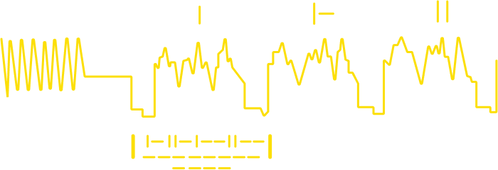
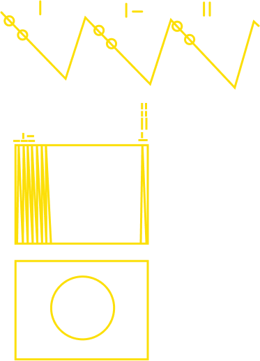

이 디스크를 발견한 외계 지적 생명체에게 우리의 목소리를 남깁니다.




영상 이미지 재생 시간
영상 이미지 재생 방법 및 시간에 대해 설명합니다.
--- 스캔을 통해 이미지를 표현하려면 512프레임의
수직 스캔이 필요함을 나타냄
--- 제대로 스캔되었을 경우 첫 번째 이미지는 원으로 표시됨
골든 레코드에 녹음된 비디오 신호의
일반적인 파장 형태 ---
스캔되는 시간을 이진법으로 나타냄 ---